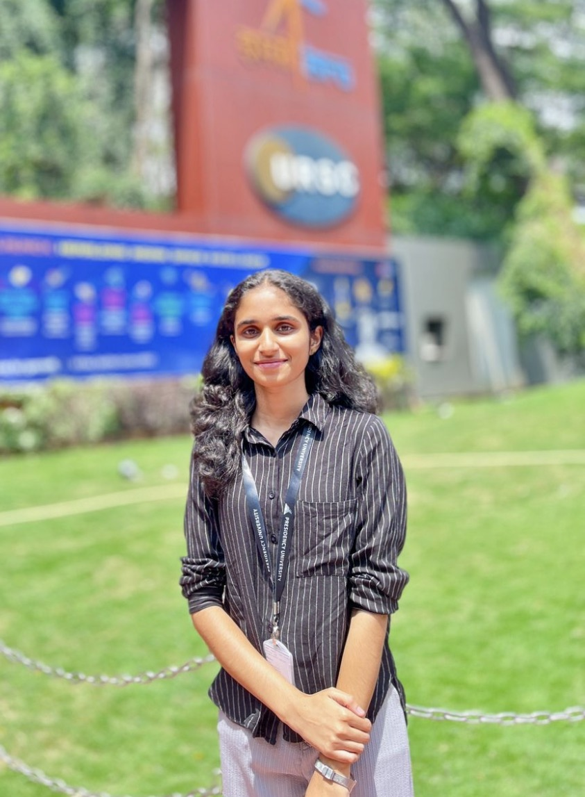

B.Tech IST Student | AI & Data Science Explorer | Learning and Innovating
View ProjectsPassionate about technology and constantly exploring the world of AI and Data Science. Currently pursuing B.Tech in Information Science, where I’m building a strong foundation in programming, problem-solving, and data-driven decision-making. I love combining creativity with technology to build useful and impactful projects. Whether it’s coding or understanding how to solve real-world problems, I’m always eager to dive deeper. Excited to connect with like-minded individuals, share knowledge, and grow in this evolving tech landscape! In the short term, I aim to excel in my studies and participate in academic projects, certification and internships to enhance my practical knowledge. My Long term goal is to become a expert in the field of IT industry by working on Innovative Technologies to solve real wold problems. I also aspire to contribute advancements to Tech industry.
Developed an Arduino-based smart trash monitoring system using ultrasonic sensors, ESP8266 WiFi module, and load sensors to detect overflow and send alerts.
AI-powered elderly companion device designed to provide continuous monitoring, emotional support, and safety for elderly individuals living independently.
Designed and developed a responsive travel data capture website using Streamlit.
Developed an advanced Java-based Ludo Simulation Engine with GUI, tournament mode, JDBC database integration, and real-time player statistics tracking.
Completed AI learning challenge by Microsoft.
Completed programming and technology courses.
Idea To Plan - Certification of Particiapation-Wadhwani Foundation.
Certificate of Particiapation in the category of Transportation and Logistics.
Email: mithabm17@gmail.com
LinkedIn: linkedin.com/in/mithabm
GitHub: github.com/mithabm